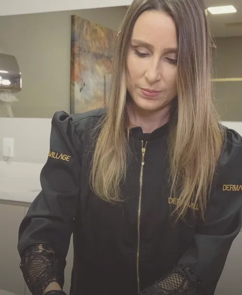
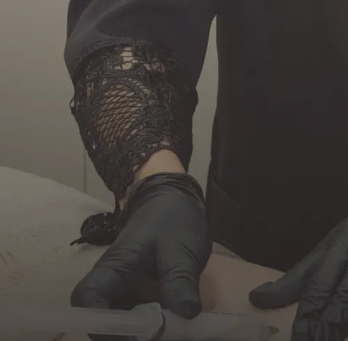
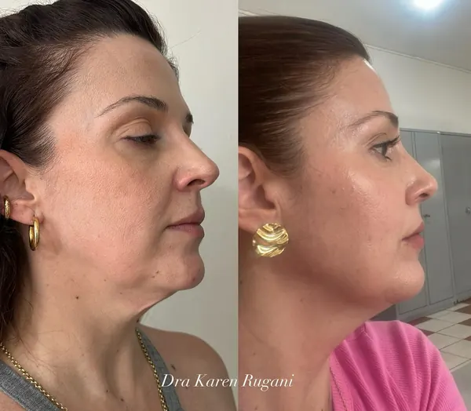
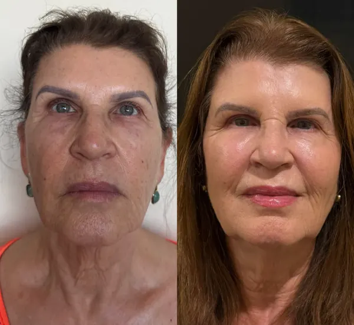
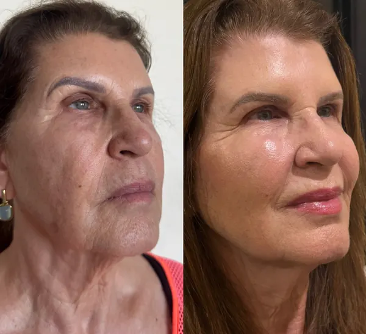
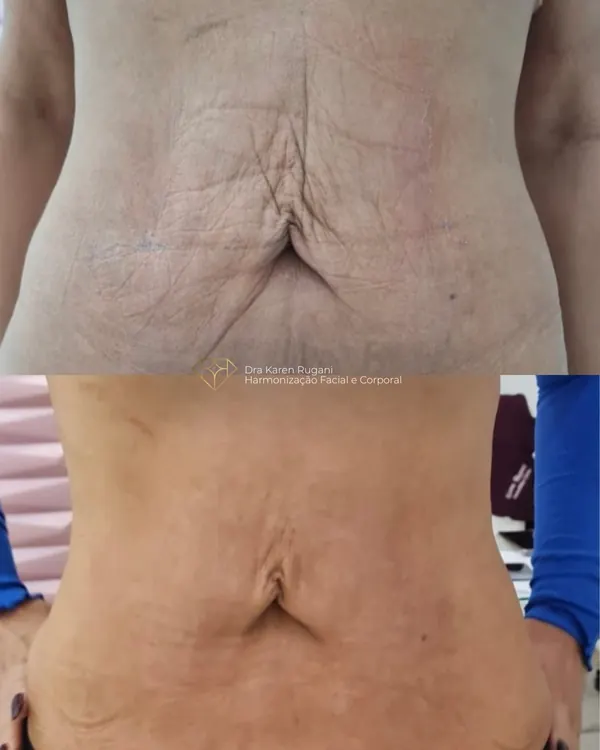
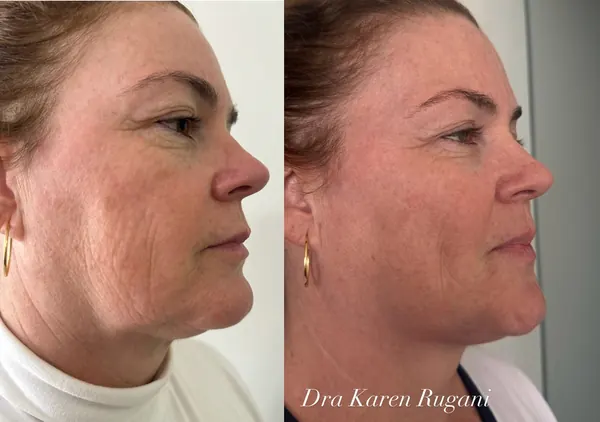

Belo Horizonte · desde 2016
Rejuvenescer sem transformar
Você não quer outro rosto. Quer voltar a se reconhecer: mais leve, descansada e ainda você.
Agendar avaliaçãoSobre a Dra. Karen
Onde a ciência encontra a delicadeza


“Meus amores, acredito em envelhecer com leveza, equilíbrio e naturalidade. Cuido de cada detalhe respeitando a sua história e os traços que fazem de você quem você é. Sigo com muita gratidão e fé por cada paciente que confia em mim.”
Farmacêutica esteta e cirurgiã-dentista, especialista em Harmonização Orofacial e Estética Avançada.
- 15+anos de
experiência - 10anos de clínica
2016 — 2026 - Pósprofessora em
pós-graduação
Formação e trajetória
- Farmácia — Universidade Federal de Alfenas (UNIFAL)
- Mestrado em Ciências Farmacêuticas — UNESP
- Graduação em Odontologia
- Pós-graduação em Farmácia Estética
- Professora em cursos de pós-graduação
- Palestrante e participante de congressos, como o A FACE, em Brasília
- Pioneira do Endoskin em BH
- Equipe de apoio, como Lorrany Roberta Araújo de Siqueira ([PREENCHER: função])
CRF-MG [PREENCHER] · CRO-MG [PREENCHER]
Tratamentos
Formas de cuidar de você
Cada protocolo começa por uma avaliação individual. A indicação vem depois de conhecer o seu rosto, a sua pele e o que você deseja.
-
Harmonização facial
Equilíbrio entre os traços do rosto, com ajustes sutis que valorizam a sua beleza natural.
Saiba mais / Agendar -
Rejuvenescimento facial e efeito lifting
Protocolos que trabalham sustentação e viço, para uma aparência mais leve e descansada.
Saiba mais / Agendar -
Toxina botulínica (full face)
Suaviza linhas de expressão do rosto todo, preservando a naturalidade dos seus movimentos.
Saiba mais / Agendar -
Ultrassom microfocado (HiPro)
Tecnologia que atua nas camadas profundas da pele, com estímulo de colágeno e firmeza.
Saiba mais / Agendar -
Contorno facial e mandibular
Definição delicada do contorno do rosto e da linha da mandíbula, sem exageros.
Saiba mais / Agendar -
Gerenciamento do envelhecimento
Protocolos de longo prazo, planejados para você envelhecer com leveza, ano após ano.
Saiba mais / Agendar -
Rosto após emagrecimento
Reposição de volume e firmeza para quem perdeu peso e sentiu o rosto mudar.
Saiba mais / Agendar -
Endoskin Pioneira em BH
Protocolo que a Dra. Karen trouxe de forma pioneira para BH. Na avaliação, ela explica indicações e etapas.
Saiba mais / Agendar -
Harmonização corporal
Cuidados para firmeza e qualidade da pele do corpo, com o mesmo olhar para a naturalidade.
Saiba mais / Agendar
Um cuidado que respeita quem você é
- 01.
Atendimento personalizado
Planejamento individual e de longo prazo, construído junto com você.
- 02.
Resultado natural
A prioridade é que você continue parecendo você, só que mais descansada.
- 03.
Tecnologia de ponta
Equipamentos e técnicas atuais, como o ultrassom microfocado HiPro.
- 04.
Atualização constante
Docência em pós-graduação e presença frequente em congressos da área.
- 05.
Mais de uma década
Uma clínica construída em Belo Horizonte desde 2016.
Resultados
Antes & depois
Casos reais de pacientes da clínica. O objetivo é sempre o mesmo: você, só que mais descansada.





Resultados podem variar de pessoa para pessoa.
01 / 05
Depoimentos
O que dizem as pacientes
[PREENCHER: depoimento da paciente]
[PREENCHER: depoimento da paciente]
[PREENCHER: depoimento da paciente]
[PREENCHER: depoimento da paciente]
[PREENCHER: depoimento da paciente]
01 / 05
Sua avaliação
O primeiro passo é uma conversa
Conte o que te incomoda e o que você deseja. A partir daí, a Dra. Karen monta um plano feito para você, sem pressa e sem exageros.
Agendar pelo WhatsAppPara profissionais
Cursos & workshops
A Dra. Karen compartilha a experiência de consultório em formações práticas, como o Workshop de Ultrassom Microfocado HiPro. Próximas turmas: [PREENCHER].
Dúvidas
Perguntas frequentes
Não encontrou a sua? Pergunte pelo WhatsApp.
01O resultado fica natural?
Essa é a essência do meu trabalho: rejuvenescer sem transformar. O planejamento respeita os seus traços e as proporções do seu rosto, para que você continue parecendo você, com uma aparência mais leve e descansada.
02Os procedimentos doem?
A sensação varia de acordo com o procedimento e com a sensibilidade de cada pessoa. Sempre que indicado, usamos recursos para deixar você o mais confortável possível, e tudo é explicado com calma antes de começar.
03Quanto tempo dura o resultado?
Depende do tratamento, do seu organismo e dos seus hábitos. Na avaliação, explico a durabilidade esperada para o seu caso e como manter os cuidados ao longo do tempo.
04Quando vejo o resultado?
Alguns tratamentos mostram mudanças nos primeiros dias; outros, como os que estimulam colágeno, evoluem aos poucos ao longo de semanas. Você recebe orientações claras sobre o que esperar em cada etapa.
05Preciso fazer uma avaliação antes?
Sim. A avaliação é o momento de conhecer você, entender os seus objetivos, analisar o seu rosto e a sua saúde e só então indicar o que faz sentido. Nenhum procedimento é feito sem esse cuidado.
06Como faço para agendar?
É só chamar no WhatsApp (31) 99230-3895. A equipe ajuda você a encontrar o melhor dia e horário para a sua avaliação.
Contato
Será um prazer receber você
- Endereço
- R. dos Aimorés, 2578, Sala 10
Lourdes, Belo Horizonte/MG
CEP 30140-076 - (31) 99230-3895
- @drakarenrugani
- Horário
- [PREENCHER]